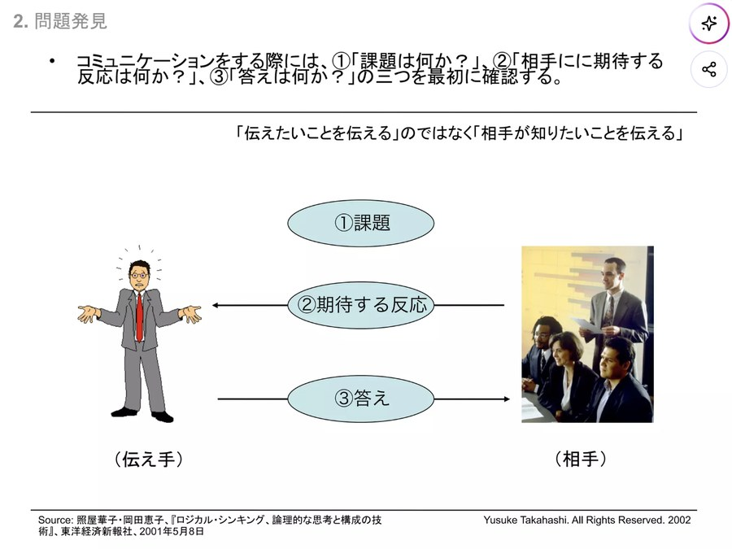
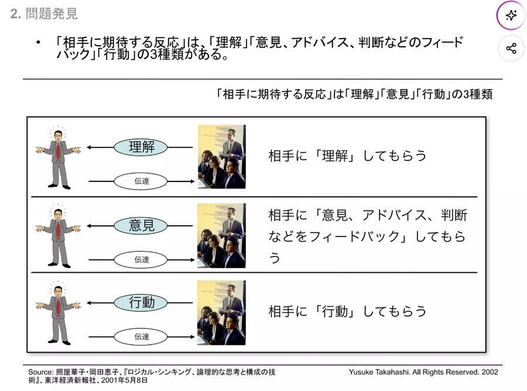
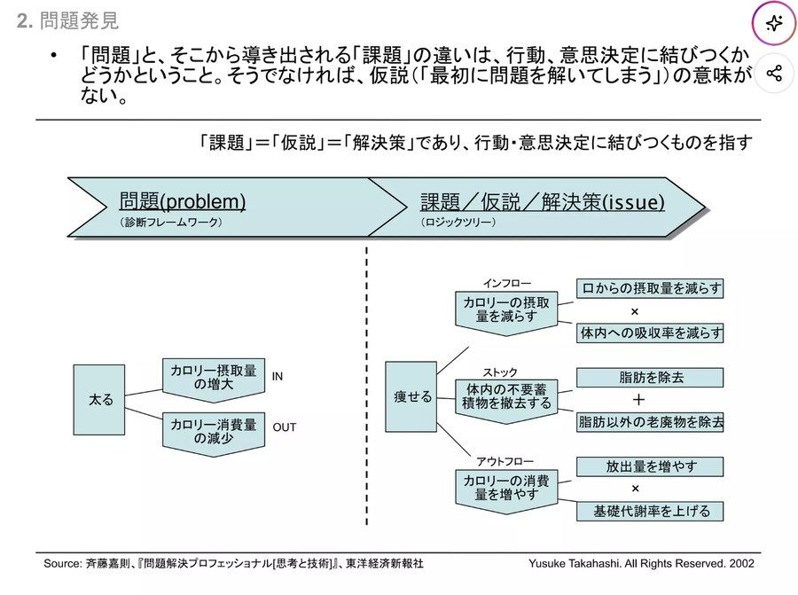
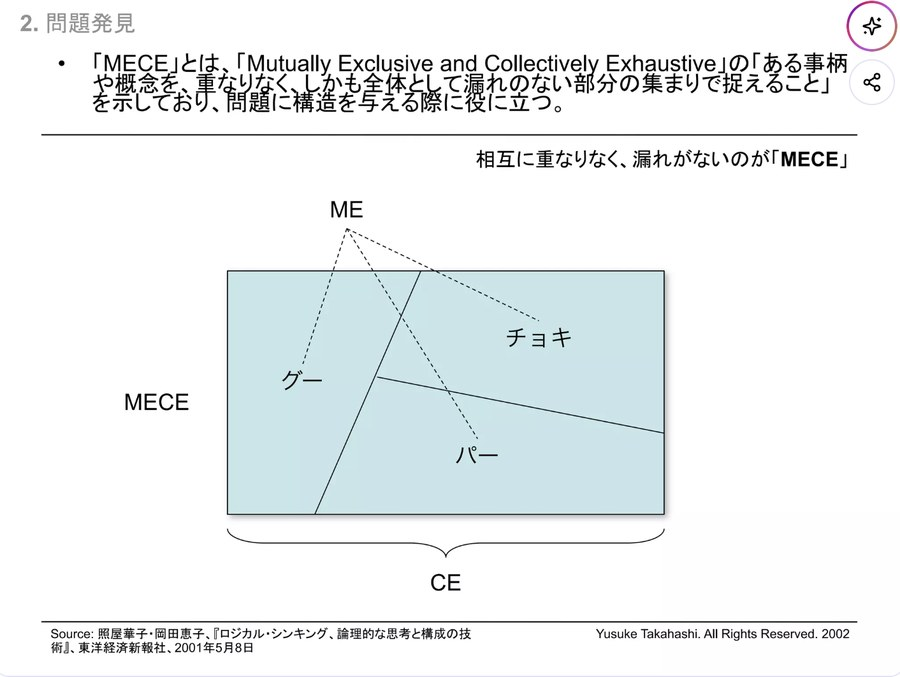
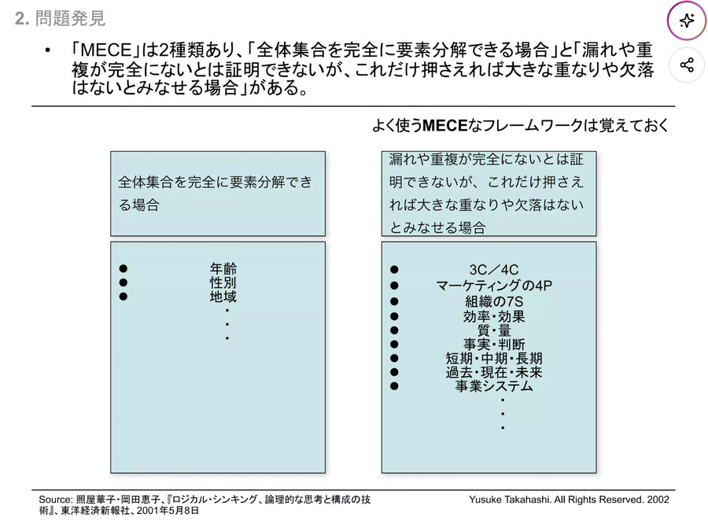
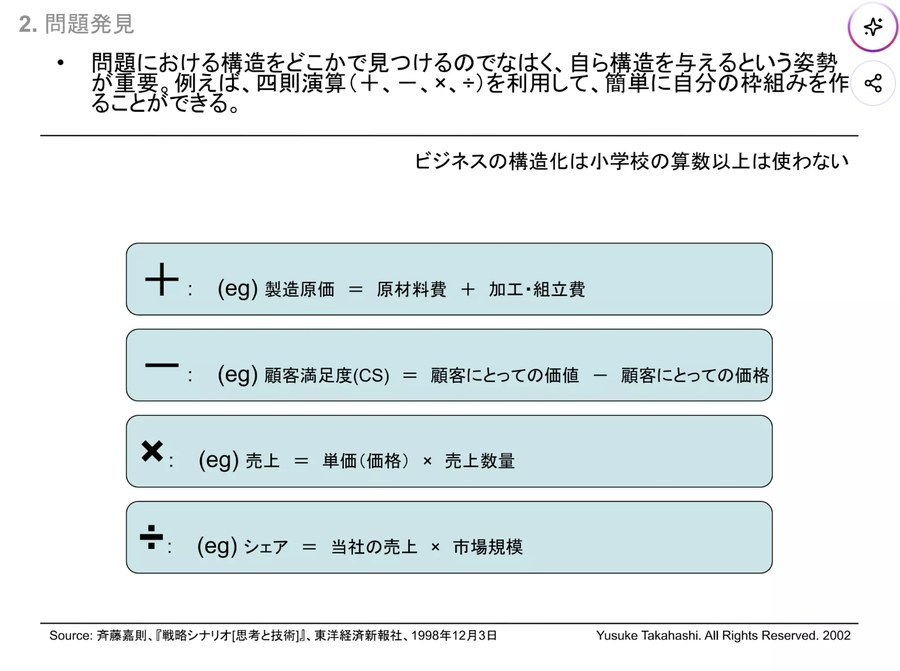
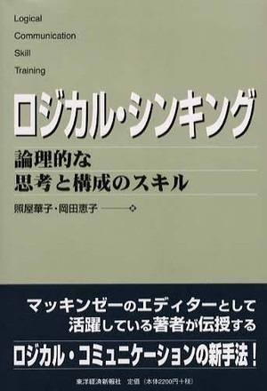

データストーリーテリング
── 分析を「伝わる物語」にする
（分析結果のグラフを大量に見せる）
「…で、私は結局、何をすればいい？」
どんなに良い分析も、伝わらなければ人は動きません。数字を「課題 → 分析 → 打ち手」の物語に構成し、1画面1メッセージで伝える方法を学びます。
第2回から第4回まで、私たちは「測る」「読む」「確かめる」を積み上げてきました。しかし、ここで見落としがちな事実があります。分析は、それだけでは何も変えないということです。
どれほど精緻な分析も、伝わらなければ行動は変わりません。「良い分析をしたのに上司が動かない」──これは分析力ではなく伝える技術の問題です。報告の価値は、費やした時間でも図の枚数でもなく、誰かの意思決定が変わったかどうかで決まります。
今日は、数字を「課題→分析→打ち手」の物語に構成し、So What? / MECEで飛びと漏れをなくし、1画面1メッセージと誠実な可視化で伝える方法を学びます。後半は EKIDEN.AI でドリル。次回の投資家向けピッチの土台になる回です。
分析を、動かす物語に変える
なぜ物語か
数字だけでは動かない
3幕構成
課題→分析→打ち手
So What?/MECE
飛びと漏れをなくす
1画面1メッセージ
主張・根拠・次の行動
可視化と誠実さ
誤解を招かない図
ケースとドリル
EKIDEN.AIで実践
第5回は「分析結果を、人が動く形に翻訳する」回。3幕構成・1画面1メッセージ・誠実な可視化を学び、EKIDEN.AIで実践します。
分析は、伝わらなければ意思決定を変えられません。第5回で扱うのは、分析結果を「人が動く形」に翻訳する技術です。
柱は4つ。①なぜ数字の羅列では人が動かないのか（虚栄の報告）。②分析を「課題 → 分析 → 打ち手」の3幕に構成する方法。③話の飛びと漏れをなくす So What? / Why So? と MECE（『ロジカル・シンキング』より）。④1画面1メッセージの設計と、嘘をつかない誠実な可視化。
後半は EKIDEN.AI のデータでドリルを行い、「うまくいかなかった」というピボットの決断をどう物語にするかまで扱います。この回が、次回のピッチの土台になります。
人は「数字の羅列」では動かない
📊数字の羅列
グラフを並べるだけ。「何が言いたいのか」「自分は何をすべきか」が分からない。＝虚栄の報告。
📖物語（ストーリー）
課題→分析→打ち手の順で、相手が理解し・納得し・行動できる形にする。＝行動につながる報告。
「行動が変わらない報告」は、見て終わりの虚栄の報告。相手が理解し・納得し・動ける形＝物語にすることが目的です。
教科書は、良い指標の条件として「行動につながる（actionable）」ことを挙げ、見て終わりの虚栄の指標を戒めます。伝え方も同じで、相手の行動が変わらない報告は、虚栄の報告にすぎません。
人間は数字の集合を記憶するのが苦手ですが、因果のつながった筋書きは自然に理解し記憶します。「今こういう問題がある→調べたらこうだった→だからこうする」という流れは、聞き手の頭のなかで論理が閉じるため、納得と行動を生みます。分析結果だけを渡されると、聞き手は「で、私は何を？」を自分で組み立てねばならず、そこで止まります。
物語にすることは脚色ではありません。事実を歪めるのではなく、相手が使える順番に並べ直すだけ。それが分析者の最後の仕事です。
「課題 → 分析 → 打ち手」の3幕構成
課題（Why）
いま何が問題か。誰が困っているか。放置するとどうなるか。
分析（What）
データで「本当にそうだ」と示す。ファネル・コホート・A/Bの結果。
打ち手（So what）
だから何をするか。次の一手と、期待される変化。
課題（Why）→ 分析（What）→ 打ち手（So what）。この順番だから、聞き手は自分ごと化し、納得し、行動できます。
課題（Why）：いま何が問題で、誰が困っているか。ここで聞き手の関心を「自分ごと」に変えます。いきなり分析から入ると「なぜこの話を聞かされているのか」が分からず、集中を失います。
分析（What）：その課題が本当に存在し、解けることをデータで裏づけます。大切なのは主張を支えるのに必要な数字だけを出すこと。全部見せると焦点がぼやけます。
打ち手（So what）：だから何をするか。ここが抜けた報告は未完成です。
3幕はスライド1枚にも資料全体にも入れ子で使えます。自分の資料を3つに仕分けて、空白があればそこが弱点です。
So What? / Why So? ── 「で、何が言えるのか」まで踏み込む
手持ちのデータから、課題に照らして言えることのエキスを絞り出す作業。図を出して終わりにせず、「だから何が言えるのか」を一文で書きます。これが主張＝スライドのタイトルになります。
◯ 強い：「質疑往復が最大の漏れ。ここを直せば最も効く」（言えることを抽出）
その主張が、手持ちのデータで本当に証明できるかを検証する作業。So What? の逆向きに問い直します。答えられない主張は、話が飛んでいる証拠です。
Why So?：「A/Bで36%→47%、各n=1,000、事前の線+5ptを超過」→ 証明できる＝飛びなし
「観察」の So What? と「洞察」の So What?
データを要約しただけ（＝観察）で止まらず、そこから次の打ち手が導けるところ（＝洞察）まで進みます。「定着が世代ごとに上がっている」は観察。「製品は改善している。だから獲得に投資すべきだ」まで言えて洞察です。ただし、観察なき洞察は思い込み。必ずデータに戻って Why So? で検証します。
参考：照屋華子・岡田恵子『ロジカル・シンキング ── 論理的な思考と構成のスキル』（東洋経済新報社）を要約・再構成。
図を出して終わりにせず「だから何が言えるか（So What?）」を一文にし、「なぜそう言えるか（Why So?）」でデータに戻って検証します。
『ロジカル・シンキング』は、伝わらない話の原因を2つに整理します。話の「飛び」と話の「重複・漏れ・ずれ」。前者を防ぐのが So What? / Why So?、後者を防ぐのが MECE です。
So What? は、手持ちのデータから課題に照らして言えることのエキスを絞り出す作業。「転換は36%です」は事実の報告どまり。「質疑往復が最大の漏れ。ここを直せば最も効く」まで言い切れば、それが主張タイトルになります。Why So? は、その主張がデータで証明できるかの逆向きの検証。答えられない主張は、話が飛んでいる証拠です。
ここで見落としがちなのが、So What? は「何に答えるための結論か」とセットだという点です。本書は、伝える前に3つを確認せよと説きます。①課題は何か ②相手に期待する反応は何か ③答えは何か。この3点が定まらないまま話し始めるから、話が飛ぶのです。

とりわけ②が要です。「伝えたいことを伝える」のではなく「相手が知りたいことを伝える」。そして「期待する反応」には3種類あります──相手に理解してもらうのか、意見・アドバイス・判断をフィードバックしてもらうのか、それとも行動してもらうのか。どれを求めるかで、必要な So What? の深さも、示すべき根拠も変わります。

データ分析の報告で私たちが求めるのは、多くの場合③行動です。だからこそ、データを要約しただけの観察で止まらず、打ち手が導ける洞察まで進む必要があります。ただし観察なき洞察は思い込み。必ずデータに戻って Why So? で確かめます。
もう一つ、本書の系譜にある重要な区別が「問題」と「課題」です。「太る」は問題（現象の診断）。「痩せる＝摂取を減らす×消費を増やす」は課題（＝仮説＝解決策）。両者の違いは、行動・意思決定に結びつくかどうか。これは、そのまま観察と洞察の違いと重なります。

図版：高橋雄介 講義資料（2002）／出典：照屋華子・岡田恵子『ロジカル・シンキング』（東洋経済新報社）、斉藤嘉則『戦略シナリオ』『問題解決プロフェッショナル』（東洋経済新報社）
同じ事実から、「観察」と「洞察」を書き分ける
EKIDEN.AI の事実（データ）です。ここから 観察の So What?（データを正しく要約する）と 洞察の So What?（打ち手が導ける）を、それぞれ一文で書いてみましょう。（教材上の数値例）
| 手持ちの事実（ネタ） | 数値 |
|---|---|
| コホートW1定着（5月1週→6月3週の各世代） | 42% → 50% → 60% → 64% |
| ファネル最終段（メール開封→質疑往復） | 36%（最大の漏れ） |
| A/B：質問候補の具体化（各n=1,000） | 36% → 47%（+11pt） |
| 獲得（サインアップ）の月次推移 | 横ばい |
① 観察（データの要約）：「定着は世代ごとに改善しているが、最終段の質疑往復は36%で最大の漏れのまま。獲得は横ばい」。＝事実を正しく圧縮しただけ。ここで止まると「で、何をすればいい？」と返されます。
② 洞察（打ち手が導ける）：「製品は改善しており、打ち手も効くと実証済み。次の四半期は、実証済みの具体化メールを全ユーザーへ横展開し、あわせて獲得に投資すべきだ」。＝課題（どこに力を入れるか）に答えている。
③ Why So?：「製品は改善」→コホートW1が42→64%。「打ち手が効く」→A/Bで+11pt（各n=1,000、事前の線+5pt超過）。「獲得に投資」→定着が改善した今なら入れた人が残る＋獲得が横ばい。すべて手持ちの事実で証明できる＝話に飛びがない。
ポイント：観察なき洞察は思い込み。逆に、観察で止まれば人は動きません。
同じ事実からでも、要約で止まれば「観察」、打ち手まで導けば「洞察」。洞察は必ず Why So? でデータに戻って検証します。
多くの報告は観察の So What? で止まっています。「定着は改善、ただし最終段は36%で漏れたまま、獲得は横ばい」──立派な要約ですが、聞いた人は「で、何をすれば？」と返すしかありません。
一歩進めて、課題に照らして言えることまで絞り出したのが洞察です。課題が「次の四半期、どこに力を入れるか」なら、答えは「打ち手は実証済み。横展開し、あわせて獲得に投資すべきだ」となります。So What? はいつも「何に答えるための結論か」とセットです。
そして洞察には Why So? の検証が必須。「打ち手が効く」と言うならA/Bで+11pt（各n=1,000）と答えられる必要があります。観察から洞察へ進み、Why So? で戻って確かめる。この往復が分析者の仕事の核心です。
MECE と、2つの論理の型 ── 根拠を「漏れなく」「型どおり」に並べる
縦方向は So What? / Why So?、横方向は MECE。この2軸で、結論と根拠を構造として組み立てます。
根拠を並べるとき、重なりなく、全体として漏れなく。EKIDEN.AI なら、獲得・活性化・定着・継続（AARRRの段階）で切れば、ファネル全体を漏れなくカバーできます。切り口の例：段階／セグメント／時間（過去・現在・未来）／事実と判断。
MECEは「全部言う」ことではありません。課題に照らして意味のある切り口を1つ選び、その中で漏れなく示します。切り口が変われば、見える結論も変わります。
🧩解説型（事実 → 判断基準 → 判断内容）
相手を納得させながら結論に導く型。今日の3幕構成（課題→分析→打ち手）はこの型です。「36%で最大の漏れ（事実）→ +5pt以上なら採用と決めていた（判断基準）→ A/Bで+11pt。だから横展開する（判断内容）」。
📋並列型（結論 ＋ 並列の根拠）
結論を先に置き、MECEな根拠を並べる型。次回のピッチで使います。「投資する価値がある（結論）／① 成長している ② 深く使われている ③ 打ち手が効くと実証済み（並列の根拠）」。
参考：照屋華子・岡田恵子『ロジカル・シンキング』（東洋経済新報社）を要約・再構成。論理＝結論を頂点に、縦は So What?/Why So?、横は MECE で関係づけた構造。
根拠は縦（So What?/Why So?）と横（MECE＝重複・漏れなし）で組む。3幕は「解説型」、ピッチは「並列型」です。
本書は論理を「結論を頂点に、根拠が構造として組み立てられたもの」と定義します。構造の軸は2つ。縦は So What?/Why So?（飛ばずにつながっているか）、横は MECE（重複・漏れ・ずれなく並んでいるか）です。
MECEは "Mutually Exclusive and Collectively Exhaustive"。ある事柄を相互に重なりなく（ME）、全体として漏れなく（CE）捉えることです。じゃんけんの「グー・チョキ・パー」が分かりやすい例。重なりがなく、それだけで全体を尽くしています。問題に構造を与えるとき、この考え方が役に立ちます。

MECEには2種類あります。①全体集合を完全に要素分解できる場合（年齢・性別・地域など）と、②漏れや重複が完全にないとは証明できないが、これだけ押さえれば大きな欠落はないとみなせる場合。後者が、いわゆるフレームワークです。3C/4C、マーケティングの4P、組織の7S、効率・効果、質・量、事実・判断、短期・中期・長期、過去・現在・未来──よく使うMECEなフレームワークは、覚えておくと切り口の引き出しになります。

そして本書が強調するのは、構造はどこかで見つけるのではなく、自ら与えるものだという姿勢です。難しい理論は要りません。四則演算（＋ − × ÷）だけで、自分の枠組みは作れます。「売上＝単価×数量」「シェア＝自社売上÷市場規模」「顧客満足＝価値−価格」というように。ビジネスの構造化は、小学校の算数以上は使わないのです。

EKIDEN.AI なら、ファネルはまさに掛け算の構造です。質疑往復数 ＝ 登録数 × 接続率 × 開封率 × 往復率。こう分解すれば、どの項を上げれば全体が伸びるかが一目で分かります。これが「構造を与える」ということです。
最後に、論理構成には2つの型があります。解説型（事実→判断基準→判断内容）は納得させながら結論に導く型で、今日の3幕構成がこれ。並列型（結論＋MECEな根拠）は次回のピッチで使います。
図版：高橋雄介 講義資料（2002）／出典：照屋華子・岡田恵子『ロジカル・シンキング』（東洋経済新報社）、斉藤嘉則『戦略シナリオ』『問題解決プロフェッショナル』（東洋経済新報社）
どの「切り口」で分ければ、答えが見えるか
EKIDEN.AI の定着率は全体で37%。ゲート（40%）に届きません。原因を探るには、どの切り口で分けるべきでしょうか。（教材上の数値例）
思いつく属性を並べる
ユーザーの道のりで分ける
走る目的で分ける
いつ始めたかで分ける
① A は MECE ではありません。「男性／女性」と「30代」「学生」は重複し（30代の男性学生が該当）、しかも他の層が漏れます。思いつきで並べると必ずこうなります。
② 最も有効なのは C（ライト / 競技・駅伝）。実際に分けると 30% vs 55% と大きく割れ、「製品は競技層に刺さっている」という答えが見えます（第4回のピボット判断）。
③ 理由：MECEは「全部を細かく分けること」ではなく、課題に照らして意味のある切り口を1つ選ぶこと。今回の課題は「なぜ定着が伸びないか」なので、定着の差を生む要因で切る必要があります。
・B（AARRRの段階）：どこで漏れるかには有効（ファネル分析）。でも「なぜ定着しないか」の原因までは分からない。
・D（コホート）：改善しているかには有効（第3回）。でも今回は全体が頭打ちで、世代で切っても打ち手が出ない。
・C（走る目的）：定着の差に直結する仮説。だから答えが見えた。
ポイント：切り口が変われば、見える結論も変わります。切り口を選ぶことこそが分析です。
MECEは「全部細かく分ける」ことではなく、課題に照らして意味のある切り口を1つ選ぶこと。切り口が変われば結論も変わります。
選択肢Aの「男性／女性／30代／学生」は MECE ではありません。「30代の男性学生」は3つの箱に同時に入り（重複）、該当しない層は抜け落ちます（漏れ）。思いつくままに属性を並べると必ずこうなります。
一方、B・C・D はどれも MECE として正しい。にもかかわらず答えが見えたのは C だけでした。なぜか。
課題が「なぜ定着が伸びないか」だからです。ならば定着の差を生む要因で切らねば意味がありません。B（段階）は「どこで漏れるか」、D（コホート）は「改善しているか」には有効ですが、原因までは教えてくれない。C（走る目的）で切って初めて30%と55%の差が現れ、「製品は競技層に刺さっている」に届きました。切り口を選ぶことこそが分析です。
1画面に、主張は1つ ── スライドの実例で見る
スライドのタイトルが結論。1枚で複数を欲張らない。
その主張を裏づける最小限のグラフ・数値だけを置く。
相手に取ってほしい行動・意思決定を明記する。
ダッシュボード／レポートも同じ
まず OMTM（最重要指標）を大きく。次に推移と内訳。飾りや不要な指標を削り、「今どうで、次に何をするか」が一目で分かる状態にします。
1枚に主張は1つだけ。主張＝タイトル、根拠＝最小限の図、行動＝次の一手。この3点が揃って初めて人は動きます。
主張＝タイトルが最も重要な原則です。タイトルは「Q2分析結果」のようなラベルではなく、言いたい結論そのものを書きます。聞き手は全員が集中して聞いてはいません。タイトルだけ拾い読みしても筋書きが追える資料が、最も強い資料です。
根拠＝最小限の図。「これも分析した」という誘惑を断ちます。図が増えるほど視線は分散し、主張は弱まります。行動＝次の一手。相手に取ってほしい判断を明記して、初めて報告は意味を持ちます。
この原則の背後にあるのは、「伝えたいことを伝える」のではなく「相手が知りたいことを伝える」という発想です。1枚に情報を詰め込みたくなるのは、自分が言いたいことを基準にしているから。相手を基準にすれば、必要なのは「課題」「期待する反応」「答え」の3点だけだと分かります。
ダッシュボードも同じです。まず OMTM を大きく、次に推移と内訳。飾りを削り、「今どうで、次に何をするか」が一目で分かる状態を目指します。1枚に主張は1つ──迷ったら、スライドを分けるサインです。
図版：高橋雄介 講義資料（2002）／出典：照屋華子・岡田恵子『ロジカル・シンキング』（東洋経済新報社）、斉藤嘉則『戦略シナリオ』『問題解決プロフェッショナル』（東洋経済新報社）
伝えたいこと別・グラフの選び方 ── カードで実例と解説を見る
各カードをクリックすると、グラフのイメージと詳しい解説（EKIDEN.AI の例つき）が開きます。
比較棒グラフ
A vs B、群ごとの大小を正確に比べる。
棒グラフは「大小を、正確に、ひと目で」比べるための道具です。人間の目は「棒の長さ」の違いを最も正確に読み取れるため、A案とB案のどちらが優れているか、どのセグメントが強いかといった比較には、円グラフや3Dではなく棒グラフを使います。
EKIDEN.AI では、A/Bテストの結果（従来メール36% と 具体化メール47%）を並べて示すのが典型です。見る人は「Bのほうが明らかに高い」と一瞬で理解できます。
使うときの注意：①縦軸は必ず0から始める（途中で切ると差が誇張される）。②比較したい対象だけを並べ、順序に意味を持たせる（大きい順、または時系列順）。③各棒に分母（n）を添える。「47%」も、10人中5人と1,000人中470人ではまったく意味が違います。
推移折れ線
時間による変化・トレンド（勢い）を見る。
折れ線グラフは「時間とともに、どう変わってきたか」を見るための道具です。点をつないだ線の傾きが、そのまま「勢い（トレンド）」を表します。改善が効いているのか、頭打ちなのか、悪化しているのかを判断するのに向いています。
EKIDEN.AI では、週次・月次のコア行動率（コーチングメールの開封率）の推移を追います。施策を入れた時点に縦線を引いておくと、「入れてから上がった／変わらなかった」が読み取りやすくなります。ただし前後比較だけでは因果は言えないので、確かめるにはA/Bテストが必要です（第4回）。
使うときの注意：①累計を折れ線にしない。累計は必ず右肩上がりになるため、調子が悪くても良く見えてしまいます（虚栄の指標）。必ず期間ごとの実数・率で描く。②線が多すぎると読めない。比べる対象は3〜4本までに絞る。
内訳積み上げ/割合
全体が何でできているか（構成）を示す。
積み上げ棒・割合グラフは「全体が、何でできているか」を示す道具です。合計の大きさと、その内訳（構成比）を同時に見せられます。「増えているのは分かった。では、どの部分が増えたのか？」に答えるのがこのグラフです。
EKIDEN.AI では、月ごとの登録者を「ライトランナー層」と「競技・駅伝チーム層」に分けて積み上げると、どちらの層が伸びているかが見えます。第4回のピボット判断（競技層へ寄せる）を語るときの根拠になります。ファネルの各段（サインアップ→ウォッチ接続→メール開封→質疑往復）の人数構成を示すのにも使えます。
使うときの注意：①要素が多すぎると読めない。4〜5区分までにまとめる。②円グラフは角度の比較が苦手なので、正確に比べたいときは棒に。③「割合（%）」だけを見せると母数の変化が隠れるため、実数とセットで示すのが安全です。
分布ヒストグラム
ばらつき・偏りを見る。「平均の嘘」に注意。
ヒストグラムは「データのばらつき（分布）」を見るための道具です。横軸に値の範囲、縦軸にその範囲に入る人数（度数）を取り、山の形からデータの実像をつかみます。
「平均の嘘」とは、データを1つの「平均値」だけで判断すると、全体のばらつきや極端な偏りが見えなくなり、実態を見誤ってしまうことを言います。たとえば EKIDEN.AI のユーザー10人のうち、1人だけが月間100km走り、残り9人がまったく走っていない（0km）場合、平均は「1人あたり10km」になりますが、これでは「平均的なユーザー」の実態をまったく表していません。この平均値だけを信じて「みんな月10km走るから、そのレベル向けの機能を開発しよう」と判断すると、誰も使わないサービスになってしまうという失敗が起こります。
だからこそ、平均値にだまされず、ヒストグラムを使ってデータの「分布（ばらつき）」をビジュアルで確認し、本当のユーザー像を見極めることが重要なのです。山が2つに割れていれば（二山＝ふたやま）、そこには性質の違う2つの集団が混ざっているサイン。EKIDEN.AI で言えば「ほとんど走らない層」と「本気で走り込む競技層」です。分けて見れば（＝セグメント）、それぞれに合った打ち手が見えてきます。
使うときの注意：①平均だけでなく中央値も見る。②山が2つ以上あれば、必ずセグメントに分ける。③区間（ビン）の幅を変えると印象が変わるので、恣意的に選ばない。
定着コホート表
世代×時間の残り具合（第3回の手法）。
コホート表（ヒートマップ）は「世代ごとに、時間とともにどれだけ残ったか」を見る道具です。縦に「いつ始めた人か（登録週＝コホート）」、横に「開始から何週たったか」を並べ、セルの色の濃さで残存率を表します（第3回の手法）。
読み方は2方向です。横に読むと、その世代の定着の“形”＝最初に大きく落ちる「崖」と、やがて下げ止まる「底」が見えます。底の厚みが、離れないコア・ユーザーの大きさです。縦に読むと、世代ごとの進歩が見えます。EKIDEN.AI では W1 の定着が 42% → 50% → 60% → 64% と上がっており、後から入った世代ほど定着が良い＝製品が良くなっている証拠になります。
なぜ必要か：全体の平均だけを見ると、新しく入った人が増えることで、既存ユーザーの離脱が埋もれて「横ばい」に見えてしまいます（＝平均の嘘の一種）。コホートに分けて初めて、改善が効いているかどうかを正しく判断できます。投資家に「伸びている証拠（トラクション）」を示すときにも、最も説得力のある図の1つです。
誤解避ける表現
軸を切る・累計・3D・分母隠しは誤読のもと。
グラフは、描き方ひとつで簡単に「嘘」をつけます。伝える技術は、都合よく見せる技術ではありません。次の4つは特に起こしやすい誤りです。
① 軸を途中で切る（truncated axis）：縦軸を0からでなく40%あたりから始めると、わずかな差が何倍にも見えます。左右の図は同じデータですが、印象はまったく違います。比較のグラフでは0から始めるのが原則です。
② 累計を使う：累計値は必ず増えるため、実態が悪化していても右肩上がりに見えます。教科書が戒める虚栄の指標の典型です。必ず期間ごとの実数・率で示します。
③ 3Dや過剰な装飾：奥行きや影は面積・角度の認識を歪めます。装飾は情報量を増やさず、誤読だけを増やします。
④ 分母を隠す：「+50%改善」と書いても、母数が20人なら偶然の範囲かもしれません。率を出すときは必ずn（分母）を添えます。
EKIDEN.AI の報告でも、悪い数字（定着37%でゲート未達）を隠さずそのまま出し、「だから競技層へピボットする」とセットで伝えました。正しい判断のための報告である以上、誠実さこそが信頼につながります。
比較は棒、推移は折れ線、内訳は積み上げ、ばらつきはヒストグラム、定着はコホート表。目的でグラフを選びます。
グラフは飾りではなく思考の道具です。伝えたいことが決まれば、使うべきグラフも決まります。「なんとなく円グラフ」は、伝わらない資料の典型的な原因です。
比較なら棒（目は棒の長さを最も正確に読む）。推移なら折れ線（ただし累計は必ず右肩上がりになるので使わない）。構成なら積み上げ棒。ばらつきならヒストグラム（平均だけでは極端な偏りが見えない）。定着ならコホート表（横に崖と底、縦に世代の進歩）。
グラフを選ぶ前に、「この図で何を言いたいのか」を一文で書いてみてください。それが書けないなら、その図はまだ資料に載せるべきではありません。各カードをクリックすると、EKIDEN.AI の例つきで詳しい解説が読めます。
「盛らない」── データで嘘をつかないために
各カードをクリックすると、具体的な図で確認できます。
累計右肩上がりの罠
累計は必ず増える。期間ごとの実数・率で見せる。
平均平均は嘘をつく
コホート・セグメントに分けて示す（第3回）。
軸軸を切らない
0から始めないと差が誇張される。
分母率には分母を添える
「+50%」も、母数が20人なら意味が違う。
悪い数字も、そのまま出す
ピボットが必要な事実を隠すと、意思決定を誤らせます。正しい判断のための報告である以上、都合の悪い結果ほど正直に、そして「だからどうするか」とセットで伝えます。
グラフは描き方次第で簡単に嘘をつけます。軸を切らない・累計を使わない・分母を添える・悪い数字も隠さない。
伝える技術は、都合よく見せる技術ではありません。グラフは描き方ひとつで簡単に嘘をつけてしまいます。
①軸を切らない：0から始めないと、わずかな差が何倍にも見えます。②累計を使わない：必ず増えるため、実態が悪化していても右肩上がりに見える（虚栄の指標）。③平均に頼らない：伸びる層と離れる層を混ぜて見えなくします（第3回）。④分母を添える：「+50%」も母数20人なら偶然かもしれません。
そして最も大切なのは、悪い数字もそのまま出すこと。EKIDEN.AI でも定着37%というゲート未達を隠さず示し、「だから競技層へピボットする」とセットで伝えました。信頼は、不都合な事実を出したときにこそ積み上がります。
EKIDEN.AI の分析を、1つの物語に
最大の漏れ
ファネルで、質疑往復への転換が36%＝最大のボトルネック。
実験で確かめた
コホートで世代改善。A/Bで具体化メールが36%→47%（+11pt）。
横展開する
質問候補の具体化を全ユーザーへ。期待：質疑往復が月+約100人。
これまでの分析（ファネル36%→A/Bで47%→横展開）は、そのまま3幕の物語になります。1枚に凝縮して伝えます。
前回までのファネル・コホート・A/Bの結果は、そのまま物語の材料になります。
課題：質疑往復への転換が36%にとどまり、ファネル最大の漏れになっている。分析：コホートでは世代ごとに定着が改善（W1が42→64%）、A/Bでは具体化メールが36%→47%（+11pt、各n=1,000、事前の線+5pt超過）。打ち手：この施策を全ユーザーへ横展開する（期待：質疑往復が月+約100人）。ここまで書いて初めて、聞き手は「では進めよう」と判断できます。
重要なのは、これが新しい作業ではない点です。分析さえ正しくやっていれば、材料はすでに手元にある。あとは相手が使える順番に並べ直すだけ。逆に「だから何をするか」が書けないなら、それは分析が意思決定に届いていない証拠です。
バラバラの事実を「課題→分析→打ち手」に並べる
次の3つの事実を、伝わる順番（3幕）に並べ替え、タイトル（主張）を1つ付けましょう。（教材上の例）
- ① A/Bテストで、具体化メールは質疑往復を 36%→47% に上げた。
- ② 質疑往復への転換が 36% で、ファネル最大の漏れになっている。
- ③ 施策を全ユーザーに広げると、質疑往復は月+約100人の見込み。
3つの事実を3幕に並べ替えるドリル。正解は②課題→①分析→③打ち手。主張はタイトルに書きます。
このドリルの狙いは、同じ事実でも並べる順番で伝わり方が変わることを体感することです。
①（A/Bで36%→47%）から始めると、聞き手は「なぜその実験を？」が分からず数字が宙に浮きます。正しい順番は ②（課題）→ ①（分析）→ ③（打ち手）。まず課題で「それは困る」と自分ごと化させ、分析で「解ける」と納得させ、打ち手で「では進めよう」と行動につなげます。
タイトルはラベルではなく主張そのものに。「A/Bテスト結果について」ではなく「最大の漏れ『質疑往復』を、具体化メールで +11pt 改善できる」。実務では材料が雑多に手元にある状態から始まります。「これは課題か、分析か、打ち手か」と仕分ける習慣が効きます。
この報告、どこが問題？
EKIDEN.AI のチームが出した報告スライドです。教科書の観点から、問題点を指摘し、書き直しましょう。（教材上の例）
書き直し例：タイトル「質疑往復への転換が36%で頭打ち ── 具体化メールで改善する」＋根拠＝週次の転換率とA/B結果（36%→47%）＋行動＝「全ユーザーへ横展開」。累計ではなく期間ごとの率で示す。
「累計が右肩上がり＝順調」という報告の問題は3つ。虚栄の指標・主張がない・行動がない。率と主張で書き直します。
実務で最もよく見かけるダメな報告のパターンです。問題は3つ。
①累計は虚栄の指標：新規獲得が止まっても、既存が離脱しても、累計は下がりません。つまりこの図からは良し悪しが読み取れない。②主張がない：「順調」は結論ではなく印象です。③次の行動がない：行動が変わらない報告は、時間の浪費です。
書き直すなら、累計ではなく週次の転換率で示し、タイトルを「質疑往復への転換が36%で頭打ち ── 具体化メールで改善する」に。根拠にA/B結果（36%→47%、各n=1,000）を最小限だけ置き、「全ユーザーへ横展開する」と明記します。伝わる資料は、たいてい短いのです。
「うまくいかなかった」を、どう物語にするか
第4回のシミュレーションで、EKIDEN.AI は定着ゲート（40%）に届かず頭打ち（37%）。セグメント別では競技・駅伝層が55%と判明し、顧客セグメント・ピボットを決めました。これをチーム／投資家にどう伝えますか。（教材上の数値例）
| 材料 | 数値 |
|---|---|
| 3回のA/B（伸び幅） | +5 → +3 → +1 pt |
| 全体の4週後定着 | 37%（ゲート40%未達） |
| ライトランナー層 | 30% |
| 競技・駅伝チーム層 | 55% |
タイトル例：「製品は“競技層”に刺さっている ── ターゲットを絞って定着を伸ばす」。悪い数字（37%）は隠さず提示し、「だから何をするか」とセットで語る。実験で学んだから決められたという筋書きが、信頼につながる。
悪い数字ほど隠さない。「37%で頭打ち」→「競技層は55%」→「だから絞る」。失敗ではなく学びとして語ります。
最も難しいのは、「うまくいかなかった」ことを伝えるときです。やってはいけないのは隠すことと言い訳すること。ピボットが必要な事実を隠せば、意思決定を誤らせます。
正しいのは、失敗ではなく「学び」として3幕で語ることです。課題：定着が37%で頭打ち、伸び幅も+5→+3→+1と縮小（悪い数字を正面から示す）。分析：セグメントで分けると競技・駅伝層は55%、ライト層は30%＝製品は特定の層に強く刺さっている。ここが物語の転換点です。打ち手：エンジンは残し、競技層へピボットする。
同じ数字でも「失敗しました」ではなく「実験したから、どこに勝ち筋があるか分かった」という筋書きになります。投資家が見ているのは「失敗しないチーム」ではなく「学習が速いチーム」です。
自分の分析を「3枚の物語」にする
🔁 復習
- 自分のテーマの分析を「課題→分析→打ち手」の3枚に並べる
- 各スライドに“主張タイトル”を1つずつ付ける（結論をタイトルに）
- 使う可視化（比較/推移/内訳/分布/コホート）を選び、軸・分母を確認する
📖 予習
- その3枚を、投資家に見せる1枚（トラクション）に凝縮するとどうなるか考える
- 教科書のレポーティング・指標の伝え方に関する箇所に目を通す
出典：A. クロール＆B. ヨスコビッツ『Lean Analytics』（オライリージャパン）を要約・再構成（逐語引用なし）。数値は教材上の例で、EKIDEN.AI の収益（Stripe）データは扱いません。
自分の分析を「課題→分析→打ち手」の3枚にし、各枚に主張タイトルを付ける。可視化は軸と分母を確認します。
新しい分析は不要です。手元の材料を、伝わる形に並べ直す作業です。
①3枚に並べる：分析を「課題→分析→打ち手」に分ける。書けない枚があれば、そこが分析の弱点です。②主張タイトルを付ける：タイトルだけ3枚つないで読んで、筋の通った要約になっていれば成功。③可視化を選び、誠実さを確認：軸は0からか。累計でなく率か。分母（n）を書いたか。悪い数字を隠していないか。
コツはタイトルから書くこと。図を作ってからタイトルを付けると、ラベル的な言葉になりがちです。先に結論を一文で書き、それを支える図だけを後から選べば、不要な図は自然に落ちます。
EKIDEN.AI でたどる「3枚の物語」の参考解答例
今日のケースの数値を使った参考解答です。自分のテーマでも同じ手順で組み立てましょう。（教材上の数値例。収益データは扱いません）
EKIDEN.AIの数値で作った3枚の解答例。タイトルが主張、図は最小限、各枚に次の行動。率と分母を必ず添えます。
EKIDEN.AI の数値で「3枚の物語」を組み立てました。自分のテーマに置き換えるときの手本にしてください。
1枚目（課題）：「質疑往復が最大の漏れ（36%）」＋ファネル図。累計人数ではなく段階ごとの転換率で示すのがポイント。2枚目（分析）：「具体化メールで +11pt」＋A/Bの棒2本。必ず分母（各n=1,000）と事前の線（+5pt）を添えます。3枚目（打ち手）：「全ユーザーへ横展開する」＋期待効果。
共通点は、①タイトルが主張、②図は最小限、③各枚に次の行動、④累計でなく率・率には分母。これが「見せる」報告と「動かす」報告の違いです。この3枚は、そのまま次回のピッチの材料になります。
今日の内容をさらに深めるために

ロジカル・シンキング ── 論理的な思考と構成のスキル
照屋 華子・岡田 恵子 著／東洋経済新報社
今日学んだ So What? / Why So?（話の飛びをなくす技術）と MECE（話の重複・漏れ・ずれをなくす技術）、そして 解説型・並列型という2つの論理構成は、この本が出典です。マッキンゼーのエディターとして活躍した著者による、ロジカル・コミュニケーションの定番書。データを「伝わる形」に組み立てる技術を、体系的に学べます。
📖 書籍の詳細を見る ↗※ 本講義の教科書は A. クロール＆B. ヨスコビッツ『Lean Analytics』（オライリージャパン）です。上記は補助教材として紹介しています。いずれも本スライドでは要約・再構成のうえ参照しており、逐語引用は行っていません。
今日の So What? / Why So?、MECE、解説型・並列型はこの本が出典。データを「伝わる形」に組み立てる技術の定番書です。
『ロジカル・シンキング』（照屋華子・岡田恵子、東洋経済新報社）は、2001年の刊行以来読み継がれる定番書。著者はマッキンゼーでエディターを務めた経歴を持ち、「なぜあの人の話は伝わらないのか」を、才能ではなく技術の問題として解きほぐします。
本書は、伝わらない話の原因を話の「飛び」と話の「重複・漏れ・ずれ」に整理し、前者を So What? / Why So?、後者を MECE で防ぐ方法を示します。さらに論理を「結論を頂点に、縦は So What?/Why So?、横は MECE で関係づけた構造」と定義し、解説型と並列型という2つの型を提示します。今日の3幕構成は解説型、次回のピッチは並列型です。
教科書『Lean Analytics』が「何を測り、どう判断するか」を教えるのに対し、本書は「それをどう伝え、人を動かすか」を教えてくれます。両輪で読むのがおすすめです。
講師と教科書

計算機科学者・連続起業家。AIx{ } 共同創業。直交化した意味空間に基づく適応的なセマンティック基盤と知識ベースを研究。シリコンバレーと東京でソフトウェアのスタートアップを創業し、プロダクト設計・グロース・顧客開発に従事。500 Startups 出身。慶應義塾大学にて博士（政策・メディア）。
 Lean
LeanAnalytics
オライリージャパン
ISBN 978-4-87311-711-9